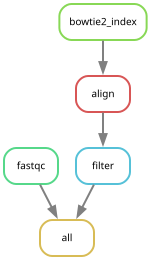

Wildcards
Module 2
- Replace a sample name in a rule with a
{sample}wildcard. - Explain how Snakemake works out a wildcard’s value from the file it needs.
- Write
rule allwithexpand()so thatsnakemakealone builds everything. - Read a dry run’s job stats and predict them before you run.
- Recognize an ambiguous pattern and fix it with
wildcard_constraints.
Time: 45 min
From one sample to ten
The module 1 fastqc rule has HCT116_CTCF_1 written into it three times. Replace the name with {sample}:
Snakefile
rule fastqc:
input:
"../../data/fastq/{sample}.fastq.gz",
output:
html = "output/{sample}/fastqc/{sample}_fastqc.html",
zip = "output/{sample}/fastqc/{sample}_fastqc.zip",
shell:
"fastqc --outdir output/{wildcards.sample}/fastqc {input}"{sample} in input: and output: is a wildcard: it stands for any text. The rule is now a pattern that can make FastQC reports for any sample whose FASTQ exists.
In shell: the wildcard is {wildcards.sample}, not {sample}. Inside the command, the names you can use are input, output, wildcards, threads, params, log and global Python variables. Exercise 2.4 shows the error you get otherwise.
How Snakemake fills in a wildcard
Ask for a file:
snakemake -n output/HCT116_CTCF_2/fastqc/HCT116_CTCF_2_fastqc.html- Snakemake looks for a rule with an output pattern that matches the name.
output/{sample}/fastqc/{sample}_fastqc.htmlmatches withsample=HCT116_CTCF_2. A wildcard used twice must match the same text both times. - It fills the same value into
input::../../data/fastq/HCT116_CTCF_2.fastq.gz. - If that file exists, or another rule can make it, the job is planned.
Wildcards always flow from outputs to inputs. Snakemake never looks in data/fastq/ to see which samples exist. It only knows what you ask for.
This is the moment to say it twice: Snakemake works backward. The FASTQ folder could hold a hundred files; if nothing asks for their outputs, nothing runs.
No target, no sample
Now run snakemake -n with no target. If fastqc is the first rule:
Building DAG of jobs...
WorkflowError:
Target rules may not contain wildcards. Please specify concrete files or a rule without wildcards at the command line, or have a rule without wildcards at the very top of your workflow (e.g. the typical "rule all" which just collects all results you want to generate in the end).The default target is the first rule’s output, and that output has a wildcard nobody filled in. The message already names the fix: a rule without wildcards at the top that lists every file you want.
rule all and expand()
Snakefile
SAMPLES = ["HCT116_CTCF_1", "HCT116_CTCF_2"]
rule all:
input:
expand("output/{sample}/fastqc/{sample}_fastqc.html", sample=SAMPLES),rule all has only inputs. It makes nothing itself; it exists so that its inputs become the targets. expand() fills a pattern once per value:
>>> expand("output/{sample}/{sample}_filtered.bam", sample=["HCT116_CTCF_1", "HCT116_CTCF_2"])
['output/HCT116_CTCF_1/HCT116_CTCF_1_filtered.bam', 'output/HCT116_CTCF_2/HCT116_CTCF_2_filtered.bam']expand() is ordinary Python that runs when the Snakefile is read, so the list is fixed before Snakemake plans anything. It is not a wildcard. With two lists (expand("{a}_{b}", a=[...], b=[...])) you get every combination.
Paths in one place
The paths ../../data and output now appear in every rule. Put them in variables, as stopping point A does:
Snakefile
DATA = "../../data" # the course data, relative to this folder
OUT = "output" # everything this workflow writes goes here
SAMPLES = [
"HCT116_CTCF_1", "HCT116_CTCF_2",
"HCT116_input-CTCF_1", "HCT116_input-CTCF_2",
"HCT116_H3K27ac_1", "HCT116_H3K27ac_2",
"HCT116_input-H3K27ac_1", "HCT116_input-H3K27ac_2",
"HCT116_DNase_1", "HCT116_DNase_2",
]
## Filtering settings (they move to a config file in module 3)
MIN_MAPQ = 30
EXCLUDE_FLAGS = 1804 # unmapped, mate unmapped, secondary, QC fail, duplicate
## The first rule is the default target: it lists the files we want at the end.
rule all:
input:
expand(OUT + "/{sample}/fastqc/{sample}_fastqc.html", sample=SAMPLES),
expand(OUT + "/{sample}/{sample}_filtered.bam", sample=SAMPLES),DATA + "/fastq/{sample}.fastq.gz" is plain string concatenation: the result still contains {sample}, which Snakemake treats as a wildcard. In shell:, {OUT} is a global variable and is filled in like {input}. The sample list and the MAPQ settings are still in the Snakefile. Module 3 moves them to a samplesheet and a config file.
Every sample through align
Snakefile
## bowtie2 writes SAM to stdout; samtools sort reads it from the pipe.
rule align:
input:
fastq = DATA + "/fastq/{sample}.fastq.gz",
index = rules.bowtie2_index.output,
output:
bam = OUT + "/{sample}/{sample}_aligned.bam",
shell:
"""
bowtie2 -x {OUT}/reference/bowtie2_index/genome -U {input.fastq} \
| samtools sort -o {output.bam} -
"""The module 1 rule with HCT116_CTCF_1 replaced by {sample}. The index has no wildcard, so every align job depends on the same one bowtie2_index job.
And through filter
Snakefile
## Global Python variables (OUT, MIN_MAPQ, ...) can be used in {braces} in shell commands.
## 1. flagstat of everything bowtie2 wrote (unaligned reads included)
## 2. keep reads with MAPQ >= MIN_MAPQ and none of EXCLUDE_FLAGS
## 3. drop reads in ENCODE blacklist regions
## 4. remove duplicates (single-end reads: no `samtools fixmate` needed)
rule filter:
input:
bam = OUT + "/{sample}/{sample}_aligned.bam",
blacklist = DATA + "/reference/blacklist.bed.gz",
output:
bam = OUT + "/{sample}/{sample}_filtered.bam",
bai = OUT + "/{sample}/{sample}_filtered.bam.bai",
flagstat = OUT + "/{sample}/{sample}_aligned_flagstat.tsv",
markdup = OUT + "/{sample}/{sample}_markdup.txt",
shell:
"""
samtools flagstat -O tsv {input.bam} > {output.flagstat}
samtools view -u -q {MIN_MAPQ} -F {EXCLUDE_FLAGS} {input.bam} \
| bedtools intersect -v -abam stdin -b {input.blacklist} \
| samtools markdup -r -f {output.markdup} - {output.bam}
samtools index {output.bam}
"""The input of filter is the output pattern of align. When rule all asks for output/HCT116_DNase_1/HCT116_DNase_1_filtered.bam, Snakemake fills in sample=HCT116_DNase_1 here, needs output/HCT116_DNase_1/HCT116_DNase_1_aligned.bam, finds that align can make it, and so on back to the FASTQ. The 20 files in rule all become 31 jobs, plus rule all itself.
The shell block is four commands. {MIN_MAPQ} and {EXCLUDE_FLAGS} are global variables. 1804 is the ENCODE ChIP-seq filter: unmapped, mate unmapped, secondary, QC fail and duplicate.
The plan for stopping point A
cd stopping-points/stopA
snakemake -n$ snakemake -n
Building DAG of jobs...
Job stats:
job count
------------- -------
align 10
all 1
bowtie2_index 1
fastqc 10
filter 10
total 32
[Wed Nov 18 06:20:59 2026]
rule fastqc:
...If you want to try Exercise 2.1, do it before you read this table. The rest of the dry run lists each job with its wildcards and reason, and ends with the same table.
The graph
--rulegraph draws one box per rule; --dag draws one per job.
snakemake --rulegraph | dot -Tsvg > rulegraph.svg
When a name does not match
Wildcards match text, so a typo in a target does not mean “file not found”. It means no rule has an output pattern that fits:
snakemake -n output/HCT116_CTCF_1/HCT116_CTCF_1.bam$ snakemake -n output/HCT116_CTCF_1/HCT116_CTCF_1.bam || true
Building DAG of jobs...
MissingRuleException:
No rule to produce output/HCT116_CTCF_1/HCT116_CTCF_1.bam (if you use input functions make sure that they don't raise unexpected exceptions).filter makes ..._filtered.bam and align makes ..._aligned.bam. Nothing makes a plain {sample}.bam.
Constraining wildcards
A wildcard matches any text, slashes included. Usually that is harmless. It becomes a problem when two rules could make the same file, or when one pattern can split a name in more than one place. The fix is to say what a wildcard is allowed to be. MicroCPipe restricts its two wildcards to the names in the samplesheet:
workflows/MicroCPipe.snakefile
wildcard_constraints:
group = "|".join(map(re.escape, GROUPS)),
run = "|".join(map(re.escape, samples["run"])),"|".join(...) builds a regular expression such as GM12878_ctrl_1|GM12878_ctrl_2, so {group} can only be one of those names. re.escape protects characters that mean something in a regular expression, like the . in a name such as GM12878.ctrl. With the constraint, a typo in a target fails with “No rule to produce” right away. Stopping point B adds the same block for {sample} (module 3). Exercise 2.2 shows the error a missing constraint causes.
Exercises
Without running it, write down the job stats table that snakemake -n prints for stopping-points/stopA/ on a fresh copy (no output/): one line per rule and the total. Then run it and compare.
In your copy of stopping point A, add a general rule that indexes any BAM:
Snakefile
rule index_bam:
input:
"{prefix}.bam",
output:
"{prefix}.bam.bai",
shell:
"samtools index {input}"Run snakemake -n output/HCT116_CTCF_1/HCT116_CTCF_1_filtered.bam.bai. Read the error. Then fix it with wildcard_constraints, without deleting the new rule.
Start from stopping point A with SAMPLES cut down to the four CTCF samples (HCT116_CTCF_1, HCT116_CTCF_2, HCT116_input-CTCF_1, HCT116_input-CTCF_2) and run it. Then add the two DNase samples to the list. Predict the job stats of the next dry run.
{sample} in the shell
In the fastqc rule at the top of this page, change {wildcards.sample} in shell: to {sample}. What does snakemake -n -p output/HCT116_CTCF_2/fastqc/HCT116_CTCF_2_fastqc.html say?
Stopping point A
stopping-points/stopA/Snakefile is the state of the pipeline now: FastQC, the bowtie2 index, alignment and filtering for all ten samples, with {sample} wildcards and expand(). A dry run plans 32 jobs; a full run takes about 46 s on a 4-core laptop.
If your own Snakefile does not run, copy this one and carry on from there:
cp -r stopping-points/stopA work/regpipe-A
cd work/regpipe-A
snakemake -n
snakemake --cores 4Key points
{sample}in an output makes a rule a pattern. Snakemake fills in the value by matching the file it needs, then uses the same value in the inputs.- In
shell:, write{wildcards.sample}. rule allcomes first and lists the final files;expand()builds that list from your sample names.- Wildcards flow backward from targets. Snakemake never scans folders to find samples.
- When two rules can make the same file, or a pattern is too loose, constrain the wildcard.
Next: Module 3, Config and samplesheets.
Wildcards – Snakemake for genomics
Wildcards – Snakemake for genomics
Wildcards – Snakemake for genomics
Snakemake for genomics
Snakemake for genomics
Turn one-sample rules into rules for every sample with {sample} wildcards, rule all and expand(), and reach stopping point A.
Turn one-sample rules into rules for every sample with {sample} wildcards, rule all and expand(), and reach stopping point A.
A hands-on Snakemake course for genomics labs: two half-day workshops, slides, exercises and answer keys.